Projet ARK
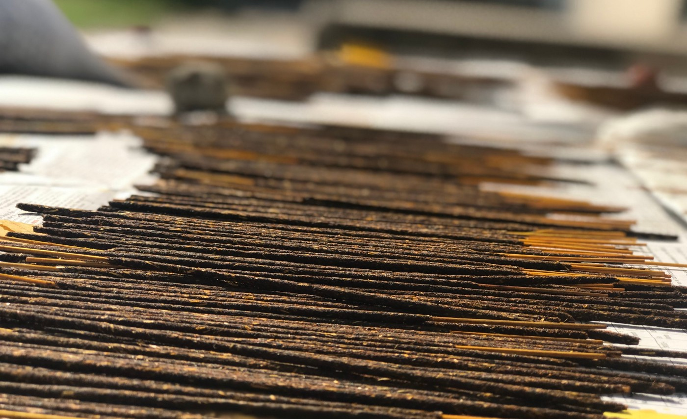
Creating a Better Future Using Flower Waste
Developing self-sustainable local Entrepreneurs out of effective upcycling of floral wasteIntroduction
For a country that believes in the Principles of Active Secularism, promoting every religion, it is quite normal to have flower waste. India is a land of flowers and they are extensively used in religious ceremonies and weddings. The resulting floral waste accounts for nearly one-third of the total solid waste accumulated in the country. These flowers are one reason behind the water pollution in our country, which is now a growing concern. Ganga has always been a symbol of faith, hope, culture and sanity. The extraordinary faith and respect for the River Ganga in India are as old as Indian culture itself.Every year 80,00,000 metric tonnes of waste flowers are dumped into the river Ganga. Floral waste, reportedly, accounts for 16% of the total river pollutant. While rotting flowers affect the water quality, the pesticides used on them leach into the waters and harm marine life.
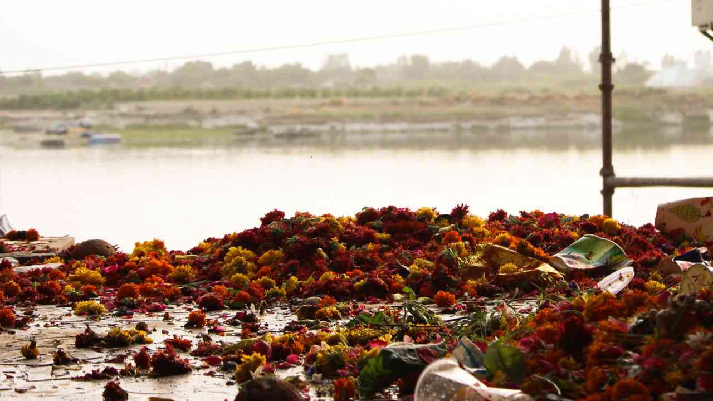
We at Enactus IITR decided to come up with an idea to shift this suboptimal equilibrium to a more balanced one. We discussed, debated, and finally decided to start the Project Ark, which aimed to upcycle flower waste and create a circular economy in the floral industry. Our solution is to develop marketable products like incense sticks from this floral waste to nudge the equilibrium in the right direction. So now the new cycle begins with the devotees bringing flowers to the temple, which are then use to make incense sticks to be used by the devotees again, creating a circular environment for the safe disposal of the floral waste.
I was a part of Project ARK, which started in my first year. The process of making the product from scratch ignited the entrepreneurial spirit inside me. The whole process of Ideation, implementation, product development, marketing, and whatnot expanded my knowledge horizon. The experience that I gained is worth sharing, so without any further ado, let’s get started.
Problem Identification ❔
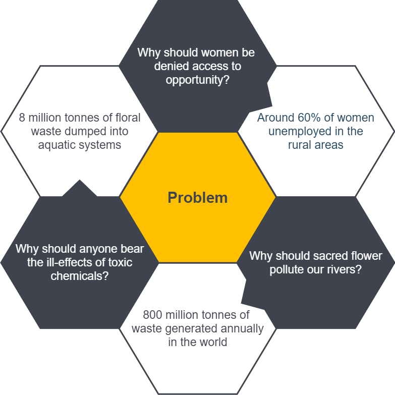
- Generation of around 800 million tonnes of floral waste annually
- Dumping the waste into water bodies like Ganges results in a considerable amount of pollution
- The harm caused to aquatic organisms due to algae growth is promoted by pollution
- Unemployment of around 60% women in a typical Indian village
- Creation of a vicious cycle resulting in the conversion of a productive segment of the population to a liability
Proposed Solutions ✨
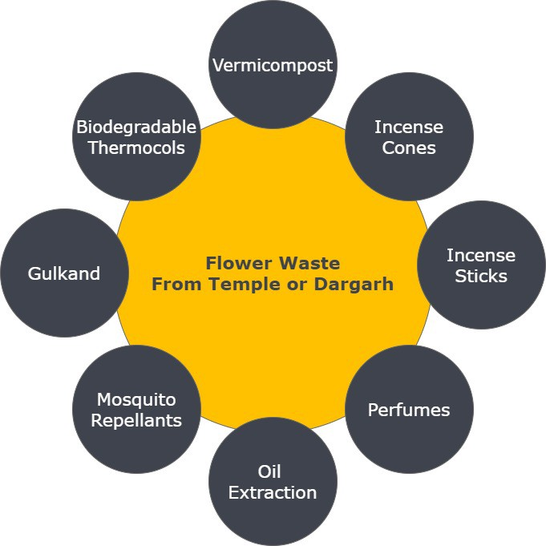
After doing extensive research on what all products can be made using flower waste collected from temples and dargah.
- Vermicompost obtained by flower waste is rich in sodium, potassium and phosphorus which is essential for plant growth and low electrical conductivity, higher reduction of total organic carbon, increase rate of total nitrogen, less C:N ratio, higher germination index and low CO2 evolution shows the maturity and stability of vermicompost.
- Biodegradable Thermocols can be made from flower waste by chemically processing it and then moulding it into thermocols, which are cheaper, eco-friendly, durable than conventional ones.
- An Ayurvedic medicine using traditional Indian recipe having many health benefits — Gulkand is a powerful antioxidant and an excellent rejuvenator. It improves appetite and digestion and has a cooling effect on the body, which helps combat fatigue, lethargy, muscular aches, itching, and heat-related conditions.
- Incense sticks and incense cones- Indian Agarbatti and dhoop market size was more than INR 3000 crores in 2011–12. It has massive potential for charcoal-free, sulphur-free, organic incense sticks using flower waste. One may also add ayurvedic herbs to add therapeutic benefits to it.
- Using discarded flowers as a source for essential oil extraction to reduce the addition of waste and promote flower re-usage.
- Mosquito repellents- Using citronella oil which can be extracted from lemongrass, and adding this ingredient in the composition of Incense sticks.
Ideation 💡
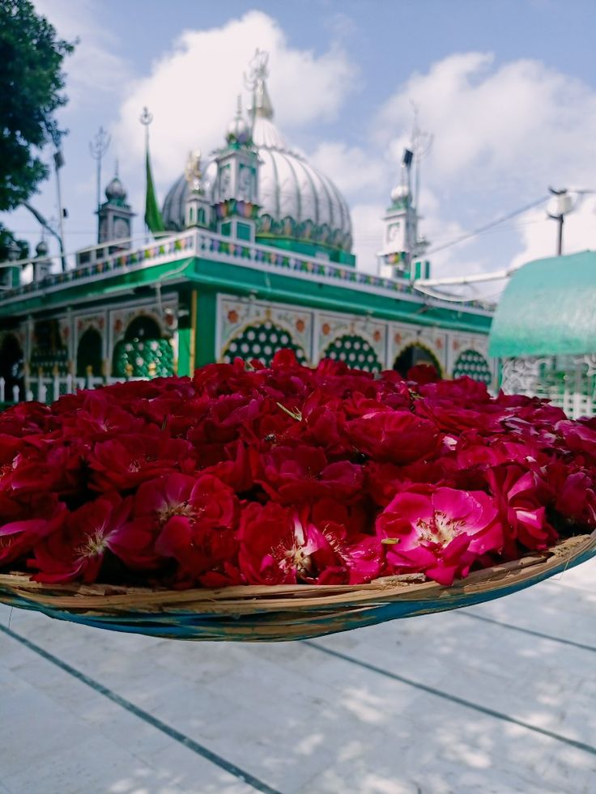
After a thorough survey over the campus and the worship places in Roorkee, it was observed that there is a massive plant and flower waste, amounting to several kilograms per day, with nearly no productive utilisation. Sensing the immense scope in the field and after conducting immense research over the applications, hours were taken to ponder over the efficient collection of the utilisable floral and agro-waste and channelise it into some profitable applications.
In our venture to upcycle floral waste, we planned to fabricate various plausible products, such as mosquito repellants, perfumes, etc. The first one that we’ve decided to come up with is floral incense sticks.
We planned on marketing these incense sticks under the brand ‘ARK’. Our product is hand-rolled by rural women, using the waste temple flowers and conveniently feasible other raw materials, and manifests a relatively more burning time with low carbon emissions. Starting right from the ideation, going through research and development, prototyping, to product improvement, manufacturing, and then the branding and marketing phases, each one of our steps forward has been following a sequence of the processes which are required to initiate or run a new business. Not only do we strive to create a marking environmental impact through our venture, but we also aim to generate a sustainable economic system and a constant source of revenue through our products.
While trying to find a channel to implement our Project, we encountered another issue that has persisted in our society for a long time, hindering our path to meaningful progress, the discrimination against women. This led us to create women communities at Anushruti and Piran Kaliyar Dargah.
ARK- The Essence of Nature
ARK has been a promising venture embarked upon the journey of targeting significant loads of untreated floral waste and preventing its dumping and polluting the aquatic systems. ARK aims to upcycle floral waste to make valuable consumer goods, the first one being the ARK Incense Sticks. We started off in collaboration with five women from Bellady, a village on the outskirts of Roorkee.
ARK incense sticks are processed from the flowers collected from dargahs and various temples around Roorkee. For the procurement of flower waste from dargah, we got the permission from Sub-Divisional Magistrate (SDM) of Roorkee. Currently, we work on three decentralised models, which I’ll explain in detail later. After the collection, the Team worked over the prototyping of the incense stick, having intensive phases of R&D coupled with extensive research which finalised the composition for our product. We trained the women of a nearby village Bellady to manufacture the agarbattis by themselves. We aim to empower women through ARK by making them financially independent and turning them into self-sustaining local entrepreneurs. After a month of employing the women, the Team then worked over the marketing of the agarbattis.
ARK incense sticks are processed from the flowers collected from dargahs and various temples around Roorkee. For the procurement of flower waste from dargah, we got the permission from Sub-Divisional Magistrate (SDM) of Roorkee. Currently, we work on three decentralised models, which I’ll explain in detail later. After the collection, the Team worked over the prototyping of the incense stick, having intensive phases of R&D coupled with extensive research which finalised the composition for our product. We trained the women of a nearby village Bellady to manufacture the agarbattis by themselves. We aim to empower women through ARK by making them financially independent and turning them into self-sustaining local entrepreneurs. After a month of employing the women, the Team then worked over the marketing of the agarbattis.
Product Development 📦
After drying up the flowers, we converted them into a powder form. We mixed it with Jigat powder, sawdust and a minimum amount of charcoal in a fixed proportion to form a dough. Now this dough is put on the sticks are then hand-rolled. After drying up the incense, they are dipped into essence oil to get the fragrance. This may sound simple to do, but it requires extensive research and development and several trial runs when it comes to making a quality product. It took us around five months to get to the final composition and method to manufacture the incense stick.
The result of the CHNS test showed that Ark incense is less polluting than any conventional incense sticks made from charcoal. Moreover, the proximity of Roorkee to Hardiwar and Rishikesh provided us with a promising market opportunity. We believe we are not selling a product rather endorsing a vision, a promise for a better future, a cleaner world, and a sustainable example for generations to follow.
The result of the CHNS test showed that Ark incense is less polluting than any conventional incense sticks made from charcoal. Moreover, the proximity of Roorkee to Hardiwar and Rishikesh provided us with a promising market opportunity. We believe we are not selling a product rather endorsing a vision, a promise for a better future, a cleaner world, and a sustainable example for generations to follow.
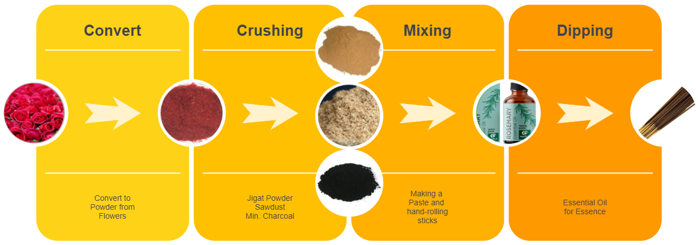
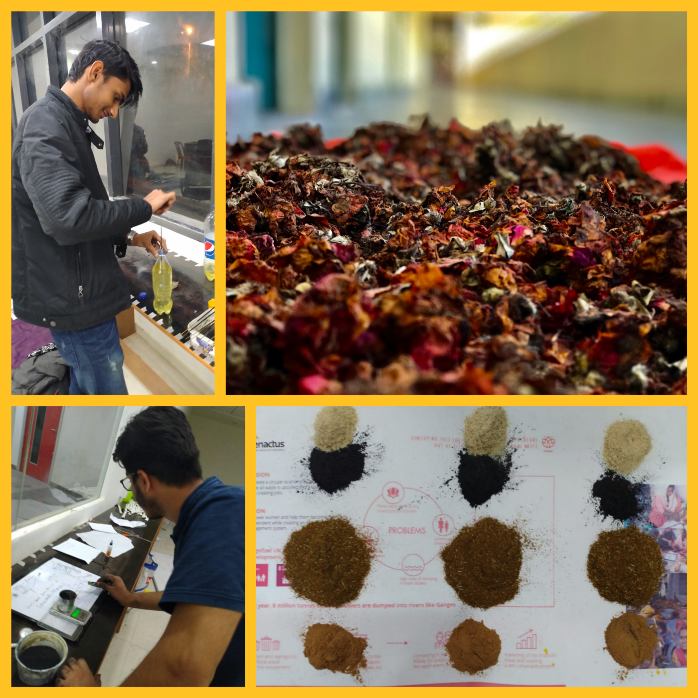
Starting with the ideation, R&D and prototyping phases of the flower bulk collected from the dargah of Piran Kaliyar Sharif, we moved on to impart the required skills to the women. We trained five women from the village Bellady near Roorkee for manufacturing the incense sticks. The first batch of about 100 packets of incense sticks couldn’t be marketed, the reason being the inconsistency of the product.
For the purpose of Product development, we did a pilot run of our product in the campus itself. We gave ARK incense sticks to our professors at IIT Roorkee and asked them to fill a feedback form after using the product. Our pilot run received mixed responses. We worked on the shortcoming and further developed it into a best in class product.
Market Research 📈
- 200 players, 400 brands
- The top 5 players account for a market share of 20%
- Recently, the industry has witnessed an immense rise from Rs 798 crore in 2015 to Rs 965 crore in FYI 2018
Ark targets the following market divisions:
- High and middle-income households
- Groups and organizations working for environmental or social causes
- High-end Ashrams and temples near Haridwar Rishikesh zone
In the market research, the Team visited the distributor based in Haridwar, where we had gone to show him our initial product. He also guided the Team on the different aspects of incense sticks production.
this, we moved to the local area of Haridwar to understand the basic purchase criteria of people, visiting shops mostly near Har Ki Pauri, the region accounting for a large number of sales of incense sticks and where dominant customers are middle class and poor. This helped us in knowing about market trends of organic and chemical incense sticks and understanding price variations.
Decentralised Models of ARK
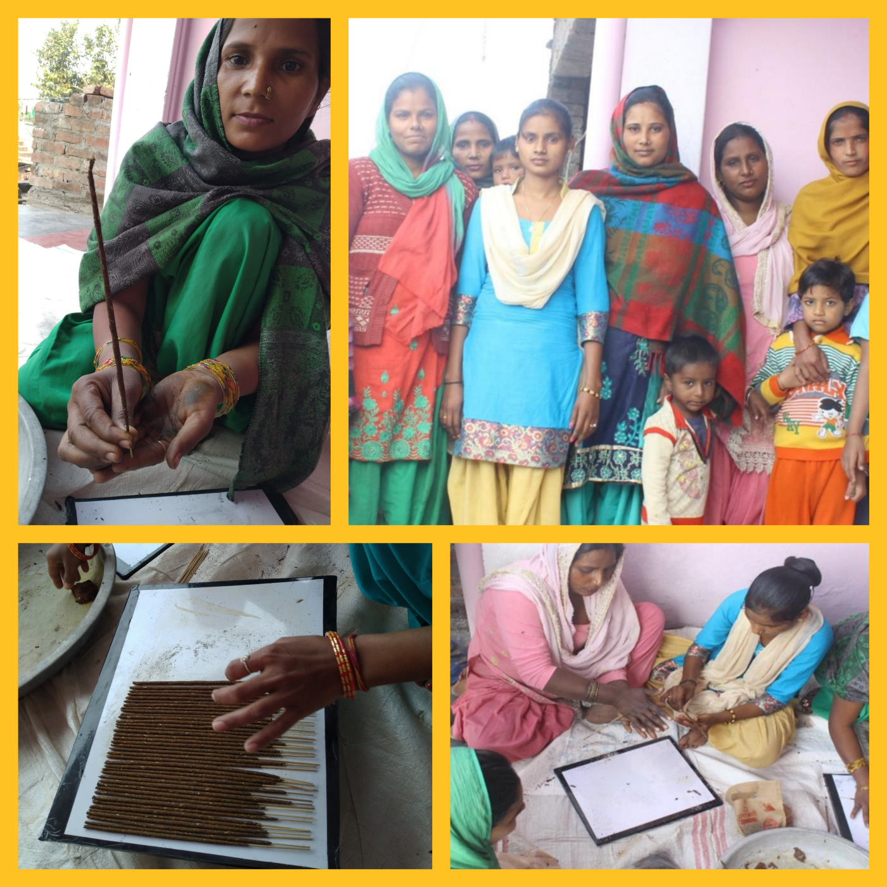
Bellady Model 🏕️
We trained the women of a nearby village Bellady to manufacture agarbattis by themselves. After a month of employing the women, the team then worked over the marketing of the agarbattis and with successful efforts, we got online distributors and started distributing wages among these women.Anushruti Model 🏫
Anushurti is a school for differently-abled children inside the IIT campus. Mothers accompany their wards during school hours as they require a guardian’s supervision in their daily lives. When we contacted the Principal of Anushurti, she told us that these women are eager to learn any skill that could help them earn money as they come from homes with modest means and also have a lot of time at their hands while at school. So, we came up with the idea to teach these women to make incense sticks.We trained them through regular workshops and provided all the raw materials. Our efforts yielded results soon, and at present, we have over 15 women from Anushurti working with us who earn around ₹2000 per month through the sale of self-made incense sticks in the markets of Rishikesh and Haridwar.
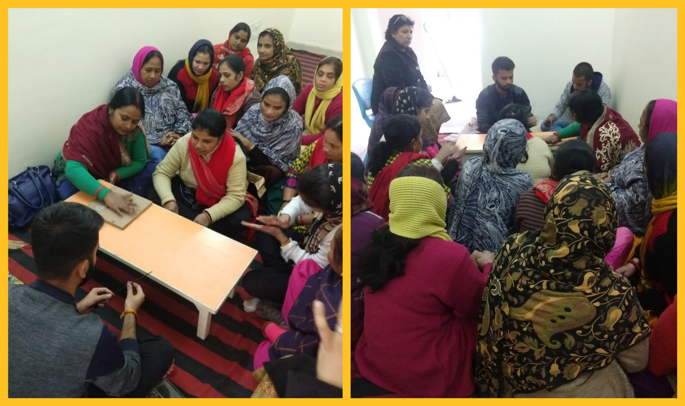
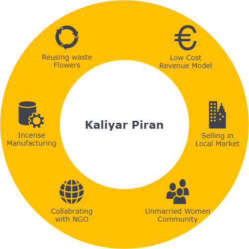
Dargah Model 🕌
Kaliyar Piran Dargah, located 5 km from Roorkee, generates around 40 to 50 kg of floral waste daily, which was earlier disposed of in the Ganga Canal. At present, we at Team Ark procure these flowers before their disposal. As the Dargah area has an unmarried women community, a regular flower waste supply, and an excellent market for incense, we thought creating a self-sustainable circular economy in this area would be profitable and convenient.We came in touch with a local NGO, The Spinal Of Youth, working in the field of child education and women empowerment. The NGO introduced us to the women in the area who wanted to participate in this initiative. With time and a positive impact in the area, we were able to convince the shopkeepers about the growth they would witness if they partnered with us. We have successfully created a self-sustainable model in the Kaliyar Dargah and continuously monitoring the progress.
Branding & Marketing 💸
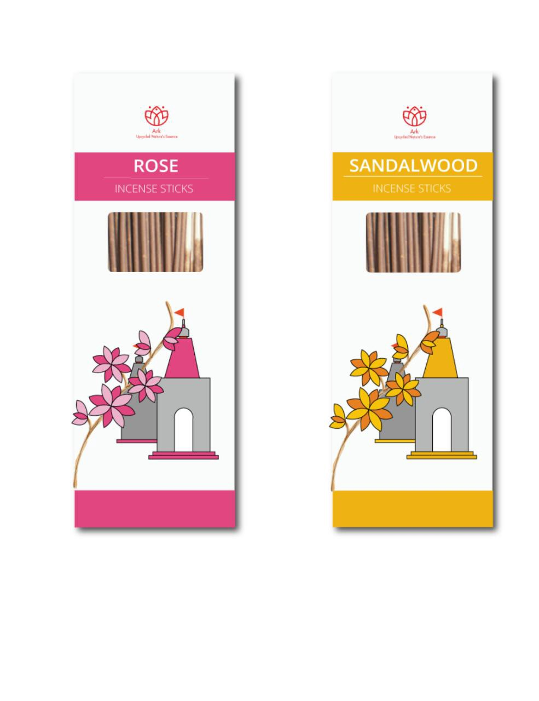
The idea was to show the constant upcycling of temple flowers into incense sticks which are in turn used for devotion again.
Designers took inspiration from Hindu Mythology that talks about human reincarnation. It follows the idea that the soul is indestructible and repeatedly takes on a physical body.
Our team tried to show the process of reincarnation from a temple flower to incense sticks. The soul of the flower is very spiritual and devotional. People have offered these flowers with a lot of faith.
Designers took inspiration from Hindu Mythology that talks about human reincarnation. It follows the idea that the soul is indestructible and repeatedly takes on a physical body.
Our team tried to show the process of reincarnation from a temple flower to incense sticks. The soul of the flower is very spiritual and devotional. People have offered these flowers with a lot of faith.